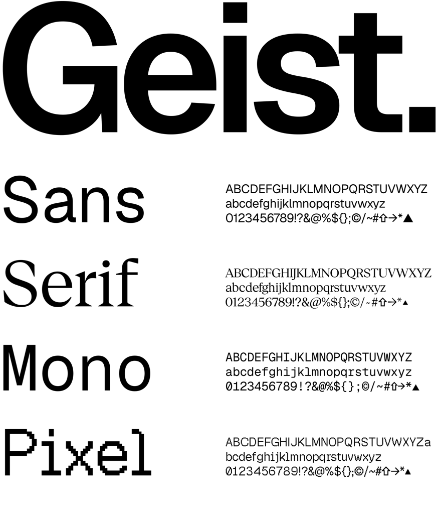

Geist Serif is a high-contrast display serif with fine, saw-toothed serifs and sharp hairlines. It joins the Geist family alongside Geist, Geist Mono, and Geist Pixel.
Its Element Shape axis offers four distinct expressions: Regular, Square, Triangle, and Heart. Regular and Square are suited to primary display typography, while Triangle and Heart provide more decorative alternatives for headlines, identities, and editorial compositions. The axis changes terminal details while preserving each glyph's proportions and rhythm, allowing designers to move from restrained editorial settings to expressive display work without changing families.
Geist Serif was created by Vercel's Evil Rabbit in collaboration with Andrés Briganti and Mark Davis. To contribute, see github.com/vercel/geist-font.
